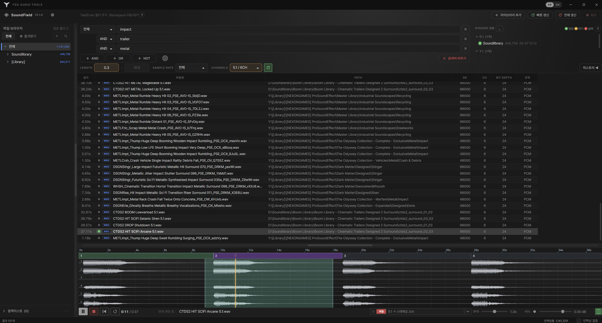

가볍게 훑고,
끝까지 듣는다
수백만 파일을 타이핑 속도로 훑고, 5.1부터 고차 Ambisonics까지 찾은 자리에서 그대로 바이노럴로 듣습니다.
SoundField는 사운드 라이브러리를 한 번 색인해 두고 그다음부터 곧바로 응답합니다. 파일명·경로·메타데이터 전 필드를 가로지르고, 결과는 그 자리에서 파형과 함께 재생되며, 멀티채널·Ambisonics는 IEM 체인을 거쳐 바이노럴로 렌더링됩니다. 앱을 떠나는 것은 내가 고른 구간뿐입니다.
v2.1.0 · 설치본 57MB · 색인과 설정은 업데이트해도 남습니다

찾고 · 듣고 · 잘라내기
라이브러리가 수 TB로 커지면 탐색기나 DAW 브라우저로는 원하는 소리를 찾는 데 시간이 걸립니다. SoundField는 자체 색인을 들고 있어 라이브러리 전체가 곧바로 응답하며, 원본 폴더에는 아무것도 쓰지 않습니다.
읽기 전용
원본 파일과 폴더를 수정하지 않습니다. 앱이 기억하는 것은 모두 로컬 저장소에 따로 들어갑니다.
로컬 색인
색인은 로컬 SQLite 파일입니다. 네트워크 드라이브든 내장 디스크든 같게 동작합니다.
중단 안전
인덱싱은 언제든 취소할 수 있고 끝난 진행분은 남습니다. 다시 실행하면 멈춘 지점부터 이어집니다.
멀티채널·Ambisonics를
헤드폰으로
스테레오 다운믹스가 아닙니다. 채널이 어떻게 배치됐는지 판정하고, 그 포맷에 맞는 경로로 보내 설치된 IEM 플러그인으로 바이노럴 렌더링합니다. DAW를 열기 전에 공간 배치를 확인할 수 있습니다.
채널 배치 판정
사용자 지정 → 파일명 표기 → WAV 채널 마스크 → 채널 수 순서로 근거를 봅니다. 6채널처럼 가능한 표준 배치가 하나면 곧바로 5.1로 처리합니다.
포맷별 라우팅
스피커 포맷은 실제 방위각으로 1차 Ambisonics에 인코딩합니다. 이미 Ambisonics인 파일은 원래 차수로 디코딩하고, FuMa만 AmbiX 순서·레벨로 변환합니다.
애매하면 A/B
9채널은 7.0.2일 수도, 2차 Ambisonics일 수도 있습니다. 임의로 확정하지 않고 두 후보를 처음부터 들려주며, 고른 값은 파일별로 저장됩니다. 언제든 자동 판정으로 되돌릴 수 있습니다.
채널 순서 비교
같은 5.1이 영화 순서(L C R Lb Rb LFE)와 윈도우 순서(L R C LFE Lb Rb) 두 갈래로 돌아다닙니다. 잘못 잡으면 중앙이 한쪽으로 쏠리고 LFE가 스피커 자리에 들어갑니다. 번갈아 듣고 파일 하나 또는 폴더 전체에 적용합니다.

같은 인코딩·디코딩 체인을 DAW에서 렌더해 샘플 단위로 비교했습니다. 오프셋은 정확히 0 sample이었습니다. 여기서 들리는 소리가 그 체인의 결과입니다.
IEM 플러그인은 앱에 동봉하지 않습니다. 무료·오픈소스 IEM Plug-in Suite를 로컬에서 찾아 씁니다. 설치돼 있지 않으면 공식 다운로드 바로가기를 안내하고, 재생은 일반 스테레오 경로로 유지됩니다.
색인부터 내보내기까지
2단계 색인
1단계는 파일 목록과 경로만 최대한 빠르게 훑어 검색을 먼저 열어 줍니다. 2단계가 뒤에서 길이·샘플레이트·채널·태그를 채웁니다.

전 필드 검색
파일명·경로·제목·아티스트·앨범·장르·설명·키워드·카테고리·서브카테고리·소스를 모두 검색합니다.
Gun_Shot↔gunshot— 공백·언더바 차이 무시- 정확 검색은 bm25 단어 색인으로 정렬
조건 조합
검색 행을 쌓아 AND · OR · NOT으로 조합합니다. UCS 기반 동의어 사전으로 범위를 넓히고, 복수형·어형 변화도 감안합니다.
속성 필터
길이·샘플레이트·채널(모노·스테레오·멀티채널)로 범위를 좁힙니다. 빈 값은 제한 없음입니다.
결과 표는 놔둔 대로
컬럼 헤더를 끌어 순서를 바꾸고 안 보는 컬럼은 닫습니다. 바뀐 배치는 저장돼 다음 실행에 복원됩니다.

여러 라이브러리, 한 트리
여러 저장 위치를 등록해 하나의 트리로 봅니다. 탭으로 작업 맥락을 나누고, 스크롤해도 상위 폴더가 상단에 고정되며, 하위 폴더만 따로 다시 색인할 수 있습니다.

중복은 검수 목록으로
같은 파일이 여러 경로에 있으면 묶어서 보여 줍니다. 제외하면 경로가 가장 짧은 하나만 남기고 나머지를 검색 결과에서만 가립니다. 파일도 색인도 지우지 않고, 언제든 되돌릴 수 있습니다.

파형과 함께 오디션
결과를 고르면 파형이 그려지고 재생됩니다. 시간축은 항상 파일 전체가 한 화면에 들어오고 세로(진폭)만 확대됩니다. 무음 기준 세그먼트 감지로 소리 덩어리를 나누고, 히스토리 드로어로 방금 들은 소리를 다시 꺼내며, 0.5x~2.0x 배속을 지원합니다.

구간만 내보내기
WAV 구간은 원본 데이터 청크를 바이트 단위로 잘라내 다시 인코딩하지 않고, 방송용(bext)·제작(iXML)·마커(cue) 청크를 그대로 옮깁니다. MP3·FLAC·AIFF는 구간 잘라내기를 지원하지 않아 원본 전체가 전달됩니다.

DAW로 끌어 놓기
감지된 세그먼트나 선택 구간을 DAW 트랙에 바로 끌어 놓습니다. 1.0x가 아닌 배속으로 내보내면 이름이 다른 파일(이름_0.45x.wav)이 만들어져 DAW가 다른 소재로 취급합니다.
테마 세 가지
기본은 무채색 회색이고, 짙은 네이비와 밝은 테마를 함께 넣었습니다.
무채색
파형과 색이 경쟁하지 않습니다. 기본 테마입니다.

짙은 네이비
네이비 바탕에 블루 포인트.

밝은 베이지
베이지 바탕에 브라운 포인트.

사양
SoundField 내려받기
Windows x64 설치본입니다. 색인·재생 히스토리·컬럼 배치는 설치 폴더 밖에 있어 업데이트해도 남습니다.
화면은 Microsoft Edge WebView2가 그립니다. 없으면 설치 중에 자동 설치를 시도합니다.